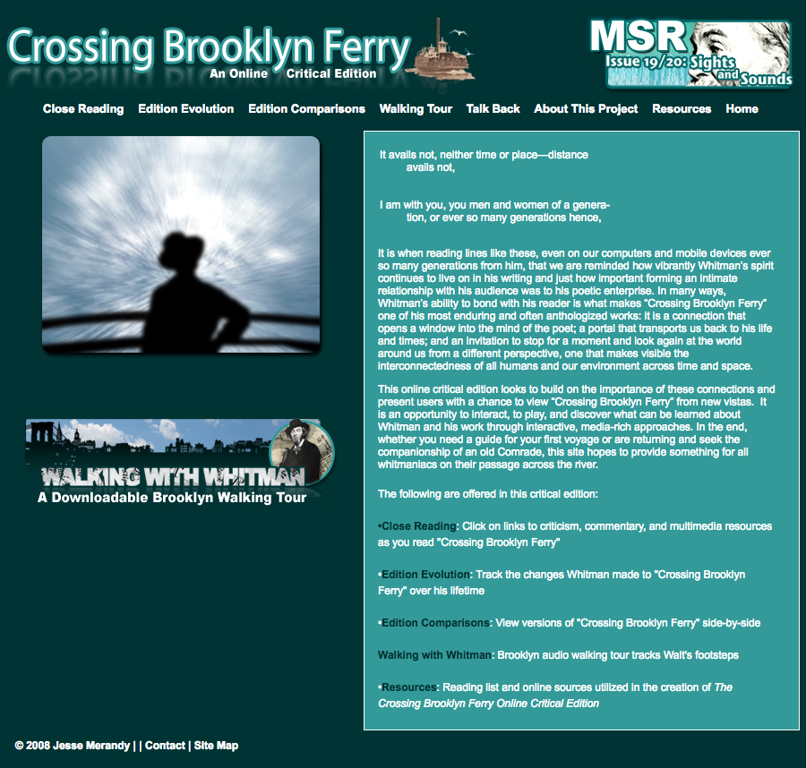
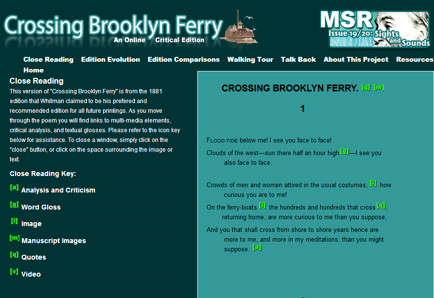
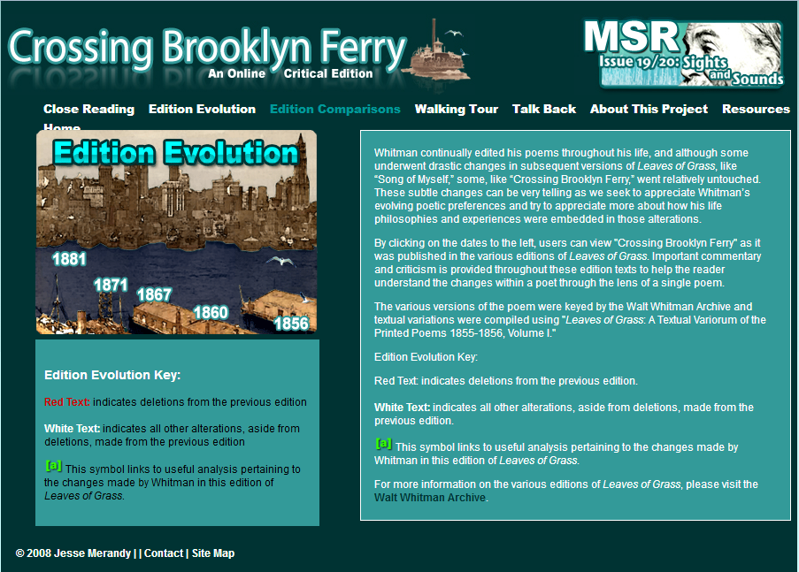
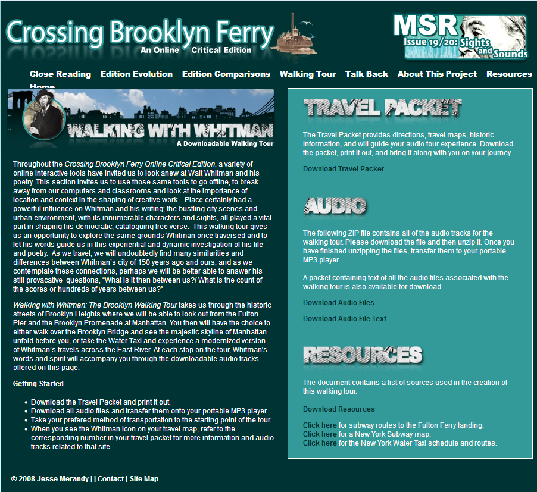

Crossing Brooklyn Ferry: An Online Critical Edition
Table of Contents
Abstract
Jesse Merandy’s legacy project, Crossing Brooklyn Ferry: An Online Critical Edition (2008-09), presents new avenues for reading and studying American poet Walt Whitman’s iconic work. Aimed at an audience of students and scholars, the site includes the text of Whitman’s acclaimed poem as it evolved through five editions of Leaves of Grass published during the poet’s lifetime. The site also includes critical commentary and analysis; edition comparisons; still and moving images; audio files; and a walking tour of Brooklyn, New York. The site is archived as an issue of Mickle Street Review, an online journal published by Rutgers University at its Camden, New Jersey campus. Its archiving ensures a measure of stability and user expectation that Merandy’s website will remain accessible as an open access resource. However, the static archiving also prevents site updating. As a result, many broken links remain on the site, as do typos, and textual transcription errors. There is no evidence of TEI/XML coding which limits reusability of text. Since quality transcription is expected in a scholarly digital edition, as is an XML layer, this site cannot be considered a scholarly digital edition. In spite of the limitations, however, Merandy’s project is a fascinating one that provides the user with a multi-sensory experience that transcends what one would have experienced in a print-only environment.
Overview & Scope of the Project
‘Crossing Brooklyn Ferry’ by American poet Walt Whitman (1819-1892), was included in his nineteenth-century groundbreaking work, Leaves of Grass. First published in the second edition of Leaves of Grass (1856) under the original title of ‘Sun-Down Poem,’ ‘Crossing Brooklyn Ferry’ is one of the most widely acclaimed and anthologized poems in the Whitman oeuvre. It contains many of the poetic elements for which Whitman is noted: thematic elements celebrating place and people, and stylistic elements including the catalogue device deployed throughout his poetry. The poem has been dubbed ‘the masterpiece of the first two editions,’ an achievement brought about through Whitman’s control of theme, imagery, rhythm, and symbolism (Allen 1967, 184). Whitman continued to revise and expand the work throughout his life and his work influences modern poetry even to the present day.
In Crossing Brooklyn Ferry: An Online Critical Edition , the online edition’s creator, Jesse Merandy, provides an enriched perspective on the poem as it evolved throughout Whitman’s maturity as a poet. This edition began as a project for Merandy when he was a student at the City University of New York Graduate Center. Merandy is currently the Director of the Digital Media Lab at The Bard Graduate Center, New York. Merandy is a self-described ‘Whitmaniac’ and his passion for the subject is evident in this project. Merandy’s familiarity with New York brings additional perspective and added value to this edition. The aim of Merandy’s work as stated in the opening page is to offer the novice or scholar an opportunity to examine the poem ‘from new vistas’ by offering an interactive multi-media approach. On a 13 October 2013 blog post, Merandy stated he was ‘interested’ in how varying theoretical approaches could provide ‘perspective on a work, but wondered how I could bring those views together in an online space. I was particularly curious as to how this experience could differ from the traditional critical edition and what new insights might be revealed in taking a new approach.’

As already noted, Merandy’s online edition has its origin as a class assignment. However, it was published in issue #19/20 of Mickle Street Review: An Electronic Journal of Whitman and American Studies (2008) with a theme of ‘Sights and Sounds.’ This open access journal is published under the auspices of the Walt Whitman Program in American Studies at the Camden, New Jersey campus of Rutgers University. For this particular issue, Merandy designed the website and served as managing editor. Merandy’s work is now archived on the online journal’s site which presents a conundrum when considering the work as a scholarly digital edition. The very fact that it has been archived as an issue of the journal underscores the fact that it is a work expected to be static in nature. However, even that basic assumption is disrupted in this case, because while the date of the issue is 2008, elements of Merandy’s website/journal contribution have copyright dates of 2009. (This hybridization is somewhat convoluted and the consideration of the Mickle Street Review as a journal might be a catalyst for a reconsideration of the meaning of journal itself, but that is a different matter altogether.) The main value in archiving Merandy’s project as part of Mickle Street Review is that it provides a solid foundation for long term sustainability and accessibility. The journal has an excellent provenance and there is an expectation that this journal (and Merandy’s site) will be available in the future. At the same time, its status as an archived work presents a drawback because the site is no longer being updated. As a result, the site is rife with many broken links. These broken links and discovered errors, including transcription errors, cannot be corrected. As technological applications continue to evolve, legacy sites that lack maintenance or updating have the potential to disappoint a user or cause one to think the site is ‘quaint.’ With the static qualities brought about by its publication in a fixed journal, Merandy’s work might be considered one of ‘the late age of print’ as defined by Jay David Bolter (1991) where the conceptual space contains ‘writing [that] is stable, monumental, and controlled exclusively by the author’ (Bolter 1991, 11). Thus, the project reflects the tensions of an emerging technological moment; it is a hybrid project where fixity is implied by the journal’s archiving, while change is anticipated via its manifestation as a website.
The limitations of Crossing Brooklyn Ferry: An Online Critical Edition are due to its archiving in a static environment. As a result, the edition does not meet current expectations for scholarly editions. The MLA Statement on the Scholarly Edition in the Digital Age outlines the benefits of digital modalities that are expected today. First, data should be stored to be reused in other works. In addition, users in a digital environment have an opportunity to participate in furtherance of scholarship by providing commentary or annotations, and for providing editorial functions (MLA 2016, 1). Because of the nature of Merandy’s project’s origin in time and space, and its publication within a static journal, neither of these expectations is met.
The state of online editions has evolved significantly since Merandy’s effort began. The nature of the effort does not comply with current best practices as defined earlier by Peter Shillingsburg (2013a), but that is to be expected given the increasing age of Merandy’s project. Standard 4.12 of the Criteria for Reviewing Scholarly Digital Editions (2014) has an expectation that underlying data be accessible in code such as XML. Further, for text encoding in the humanities, ‘TEI is now considered the de facto standard’ (Pierazzo 2016, 308). However, there is no indication that XML/TEI was used in Merandy’s project.
Another basic principle applied by one scholar prescribes that all the relevant forms of a work should be included to serve as a representation of the work (Shillingsburg 2013a). Merandy has attempted to meet this standard by including the text from the second edition of Leaves of Grass and the revisions that follow. However, another best practice for bibliographers or textual critics is to identify meticulously ‘which particular copy of the first state of the first printing of the work was used as copy-text for their new printed scholarly edition’ (Shillingsburg 2013a, 3). The effort under review falls short of this expectation. While Merandy cites the year of each edition of Leaves of Grass where ‘Crossing Brooklyn Ferry’ was originally included or revised, he does not provide the full bibliographic information for each of those editions. Instead, it is unclear what Merandy used as source materials. While the resource list seems to indicate Merandy relied on the variorum edition of Whitman’s works to transcribe the work, it is also possible that the transcriptions were derived from the Walt Whitman Archive which is also cited in the list of resources. Merandy’s omission of precise bibliographic citation is a limitation on the reliability of the work because it is difficult for the reader to compare Merandy’s text against a specific primary source.
Including annotations within textual transcriptions is another practice that one scholar recommends should be avoided (Shillingsburg 2013a). Merandy avoids this problem by providing transcriptions with embedded annotations (the menu option labeled Edition Evolution) and without them (the Edition Comparisons menu option). That allows part of the website to function as Shillingsburg advises as a stable foundation upon which critical analysis can be built. ‘Separating text-only from enhancement makes both transcription of text and enhancement of text more versatile and flexible’ (Shillingsburg 2013a, 11). Merandy has accomplished this to some extent through the drop down menu choices.
Merandy’s site includes transcriptions without accompanying page images from source texts. ‘A virtual collection of transcriptions without images of the material archive is not a virtual archive--is not a surrogate in any sense whatsoever’ (Shillingsburg 2013b, 3). As a result, the scholar would be unable to rely on the transcription because it is unverifiable. Unfortunately, that is the case with Merandy’s project. The user can go out of the site to compare texts, but cannot verify transcriptions within it.
In spite of these limitations, Merandy does provide an interesting approach to the study of this iconic poem. From the home page of Crossing Brooklyn Ferry, users can link to seven different sub-pages from a drop down menu within the site as well as to other content in the issue of the Mickle Street Review. The seven options are headed ‘Close Reading’, ‘Edition Evolution’, ‘Edition Comparisons’, ‘Walking Tour’ (multi-sensory), ‘Talk Back’, ‘About This Project’, and ‘Resources’. The sub-pages will be examined separately. Unfortunately, no search functionality is built into the site.
Website Sections
Close Reading
Walt Whitman stated his intentions about further publication in the unnumbered ninth edition (1891) of Leaves of Grass, published by David McKay. Of the various published editions, the poet wrote, ‘I prefer and recommend this present one, complete, for future printing, if there should be any’ (Whitman 1891, 2). Merandy’s opening statement in the close reading section cites the 1881 edition as Whitman’s preferred edition. However, Whitman did not revise ‘Crossing Brooklyn Ferry’ after the 1881 edition, so Merandy’s close reading does examine Whitman’s ‘final’ published version of the poem. In the close reading, Merandy provides glosses for vocabulary, and offers critical insights. These features add value far beyond what a traditional textual essay would have provided. Unfortunately, Merandy’s introduction to this section is somewhat misleading as noted above and a typo (a misspelling of ‘preferred’). The textual transcription of the poem in this section has at least one error (‘thiswhich’ instead of ‘this which’ in stanza 8:5) which impacts keyword searching. The combination of these missteps must give the user pause.

- a analysis and criticism
- g word gloss
- i image
- m manuscript images
- q quotes
- v video
The inclusion of still images and a video recording provides added value for the reader. Static visual images include primary texts, photographs or paintings of New York’s waterfront, people, buildings, etc. Including images provides context for contemporary users, and defines antiquated terms such as ‘lighter’ or ‘schooner’ for modern readers. Juxtaposing nineteenth-century images of places with twenty-first-century ones also provides an enhanced perspective. Most of the images were downloaded from the New York Public Library’s (NYPL) digital collections and Merandy credits the NYPL by providing the image number, but attribution for other images is lacking.
The single video image included in this edition is a 1903 video recording entitled Panorama Water Front and Brooklyn Bridge from East River from Thomas A. Edison, Inc. The video includes a phenomenal view of the Brooklyn Bridge which Whitman might have seen during the bridge’s construction. Merandy’s inclusion of this vision speaks to progress in the industrial age; the completion of the bridge in 1883 would make the Brooklyn-Manhattan ferry system obsolete. So Merandy’s inclusion of the video serves as a bit of poetry unto itself. The file is stored as an MPG file. The source information shows the video can be downloaded from the Mickle Street Review website, but it could not be discovered there. It is likely that it was originally downloaded from the Library of Congress website where it can be viewed, but the site does not include a citation for it. Providing a complete citation at the item level (the video recording) might help users access additional material.
In the close reading section, Merandy includes three sample images from Whitman’s 1855-56 Notebook which can be viewed by clicking on the embedded ‘m’ code. These images provide the user with a sense of materiality of the text, connecting the twenty-first-century reader with the nineteenth-century writer. The digital world does not support tactile modality to promote understanding – at least not yet – so the inclusion of these images provides a surrogate. Although the inclusion of the images provides an introduction to the manuscript, the user does not have the option to compare the transcription to the original document. The text does not show the transcription of the notebook page. The Walt Whitman Archive includes notebook images with accompanying transcription in TEI, but the page images provided on Merandy’s site are not included there yet.
The display from clicking in the close reading section is sometimes difficult to interpret. This factor can be attributed to the dated code. All in all, there are some concerns about the functionality of this section, but Merandy’s insights are interesting and worth reading.
Edition Evolution
In this section of the website, Merandy traces Whitman’s changes and emendations to ‘Crossing Brooklyn Ferry’ from the original publication in the 1856 edition of Leaves of Grass through the 1881 edition. Merandy uses visual cues (red or white text) to show deletions or changes and once again uses an embedded code ‘a’ to include textual analysis. There is real value in this method. When compared with the variorum edition Merandy cites in the resource list, the changes are much clearer to understand and recognize. This example showcases the value of a web-based edition over the black and white printed page. Here the text pops up just as it did on the close reading section of the website with some of the same idiosyncrasies. In this section, too, Merandy has embedded related images and textual commentary.

One value added feature of Merandy’s approach is the photograph of Whitman embedded in the text that corresponds with the publication period of each edition. This feature gives a sense of time passing; the user can follow the maturation of the poet’s work as he aged.
Edition Comparisons
In this section, Merandy allows the user to select two different editions and read them side by side. This comparison method lacks the sophistication and functionality of such comparisons that can be generated today using open source software applications such as Juxta. Users on Merandy’s site must find the variants themselves. Comparing Merandy’s textual transcriptions with editions stored in The Walt Whitman Archive using Juxta revealed a small number of transcription errors on the website. These are recorded in the table below. Curiously, the transcription errors in the edition comparisons subpage are not consistent with the edition evolution subpage. Errors, whether in the text of transcriptions or introduced by the transcriber, undermine the value of any textual project. While these transcription errors are few and slight, they do change the reading of the poem, and in poetry especially, nuances matter. As the MLA Statement on the Scholarly Edition in the Digital Age indicates, ‘completeness and accuracy of textual account and resultant text or texts’ is expected in a scholarly edition as a ‘best practice’ (MLA 2016, 4).
Transcription errors revealed in Juxta:
| Edition | Stanza: Line | Close Reading | Edition Evolution | Edition Comparisons | Whitman Archive Page Image |
|---|---|---|---|---|---|
| 1860 | 5:01 | -- | instance | instance | distance |
| 1860 | 17: 7, 24: 13 | -- | rôle | rle | rôle |
| 1881 | 6:07 | knotted | knotted | knotted | knitted |
| 1881 | 8:06 | thiswhich | this which | thiswhich | this which |
Walking Tour
One of the most interesting attributes of Merandy’s project is the inclusion of the Brooklyn walking tour. As a New York City resident and former CUNY student, Merandy is qualified to provide this enhanced perspective. Walking with Whitman: A Downloadable Walking Tour takes the visitor ‘through the historic streets of Brooklyn Heights’ along with an opportunity to cross into Manhattan, either via the Brooklyn Bridge or water taxi. The user is offered a fresh, multi-sensory experience for studying Whitman’s Brooklyn. This section of the website allows the user to download a travel packet and text of the audio files as portable document files. The travel packet includes directions, travel maps, and historic information to guide the user along the roads of Brooklyn. Of course, since 2009 when this packet was completed, Google Maps has become a more sophisticated application and Merandy’s maps look fairly primitive by comparison. An updated version of this site could include a mobile app. Technology has come a long way since 2009.
This experience can be considered multi-sensory because people today (Whitman’s ‘generations hence’) who actually take the tour will find their senses stimulated by the sounds of the Brooklyn streets, the smells from food wagons, and other urban delights. This kind of exploration brings the works of Whitman to life. It is perhaps the single most important aspect of Merandy’s project.

Unfortunately, because the site has not been updated, links to additional resources (with the exception of boat tours) are broken.
Other Sub-Pages
The link for the ‘Talk Back’ sub-page is broken so it is impossible to identify Merandy’s intent. The link to ‘About This Project’ gives an overview of Merandy’s project and acknowledges his mentors for the project. The ‘Resources’ page includes a bibliography of works cited throughout the site. However, many of the links to external sites are broken. The list of resources also includes misspellings (‘Fienberg’ for ‘Feinberg’ at the Library of Congress).
While fixity (as slippery a term as it is) is anticipated in printed editions, fixity in the digital world is not expected, so encountering so many broken links is very disappointing.
Conclusion
Guidelines from the Institut für Dokumentologie und Editorik (IDE) indicate that to be considered a scholarly digital edition, a work must include a statement of the editorial method employed, comply with scholarly expectations for content and quality, and open up new possibilities beyond those of the age of print (2014). In IDE terms, scholarly digital editions are ‘information systems which follow a methodology determined by a digital paradigm.’ From such a broad generalization, Merandy’s project, Crossing Brooklyn Ferry: An Online Critical Edition, would appear to qualify as a scholarly digital edition. It includes a statement about the editorial method, and opens up possibilities for study that were not available in the print age. IDE guidelines also require an abstraction layer such as XML for consideration as a scholarly digital edition, but Merandy’s project does not include evidence of this layer.
Merandy’s project is commendable in that it provides users with an enriched perspective on Whitman’s iconic poem through the incorporation of textual commentary, embedded images, sound files, and other multi-sensory features. Particularly noteworthy is Merandy’s creation and inclusion of the Brooklyn walking tour. Students encountering the poem for the first time would find Merandy’s site to be very informative and eye-opening. It seems to this reviewer, however, that quality of the work remains the commonality whether an edition is published in a print medium or in an electronic format. Accuracy and careful transcription from the source material remain paramount so that scholars and perhaps more importantly, students, can use a resource with confidence and surety, if not fixity. Because of the lack of the evidence for the abstraction layer, attribution questions, factual errors, the lack of clear bibliographic citation for the various editions, the admittedly small but significant number of transcription errors, and unfortunate excess of broken links, this reviewer cannot consider this effort to be a scholarly digital edition in the strictest sense of the term. If Merandy would take this legacy edition out of mothballs, correct the errors, and update the coding, it has the potential to become one, and Merandy is certainly the one to do it.
The main problem with legacy editions is that as technology marches forward, these works may be left behind and there is a real concern that at some point in the future, access to them might be limited. Given its genesis as a student project (which is the case with so many digital humanities projects) Merandy’s Crossing Brooklyn Ferry: An Online Critical Edition is a reflection of its time and reflects the shortcomings of a legacy project which was not originally envisioned as a definitive scholarly digital edition. Still, this project is a fascinating one and warrants consideration in the field of Whitman studies. The examination of Merandy’s site also raises philosophical questions about the nature of legacy editions in a time of change where today’s efforts are out of date tomorrow. What is the responsibility for maintaining legacy editions as digital tools continue to evolve? Is it fair to assess them against a standard that was not available at the time of their creation? What about the temporality of the project? These questions, of course, go beyond the scope of this review but they remain intriguing.
Bibliography
- Allen, Gay Wilson. 1967. The Solitary Singer: A Critical Biography of Walt Whitman. New York: New York University Press.
- Bolter, Jay David. 1991. Writing Space: The Computer, Hypertext, and the History of Writing. Hillsdale, New Jersey: Lawrence Erlbaum.
- Merandy, Jesse. Jesse Merandy (blog). https://web.archive.org/web/20170605170316/http:/jessemerandy.com/crossing-brooklyn-ferry-an-online-critical-edition/.
- MLA Committee on Scholarly Editions. 2016. ‘MLA Statement on the Scholarly Edition in the Digital Age.’ Modern Language Association of America. https://www.mla.org/Resources/Research/Surveys-Reports-and-Other-Documents/Publishing-and-Scholarship/Reports-from-the-MLA-Committee-on-Scholarly-Editions/MLA-Statement-on-the-Scholarly-Edition-in-the-Digital-Age.
- NINES and Permanent Software. Juxta. http://www.juxtasoftware.org/.
- Pierazzo, Elena. 2016. ‘Textual Scholarship and Text Encoding: A New Theoretical Framework.’ In A New Companion to Digital Humanities, edited by Schreibman, Susan, Siemens, Raymond George, and Unsworth, John M., 307–21. Chichester: John Wiley.
- Sahle, Patrick, Georg Vogeler, et al. 2014. ‘Criteria for Reviewing Scholarly Digital Editions.’ Institut für Dokumentologie und Editorik. https://www.i-d-e.de/publikationen/weitereschriften/criteria-version-1-1/.
- Shillingsburg, Peter. 2013a. ‘Development Principles for Virtual Archives and Editions.’ Center for Textual Studies and Digital Humanities Publications. http://ecommons.luc.edu/ctsdh_pubs/4.
- Shillingsburg, Peter. 2013b. ‘From Physical to Digital Textuality: Loss and Gain in Literary Projects.’ Center for Textual Studies and Digital Humanities Publications. http://ecommons.luc.edu/ctsdh_pubs/2.
- The Walt Whitman Archive. Edited by Ed Folsom and Kenneth M. Price. [Lincoln, Neb.]: Center for Digital Research in the Humanities, University of Nebraska--Lincoln. http://www.whitmanarchive.org/.
- Whitman, Walt. Leaves of Grass. [9th ed.] Philadelphia: David McKay. 1892. http://whitmanarchive.org/published/LG/1891/whole.html.
Notes
- Browser used was Firefox 55.0.3 on Windows 10 Enterprise version 1607. Similar browser anomalies were also found using Chrome 61.0.3163.79. ↑
@article{cbf,
author = {Hinton, Mellissa},
title = {Crossing Brooklyn Ferry: An Online Critical Edition},
journal = {RIDE – A review journal for digital editions and resources},
number = {7},
year = {2017},
doi = {10.18716/ride.a.7.1},
url = {https://doi.org/10.18716/ride.a.7.1},
}TY - JOUR
AU - Hinton, Mellissa
TI - Crossing Brooklyn Ferry: An Online Critical Edition
T2 - RIDE – A review journal for digital editions and resources
IS - 7
PY - 2017
DA - 2017/12
DO - 10.18716/ride.a.7.1
UR - https://doi.org/10.18716/ride.a.7.1
PB - Institut für Dokumentologie und Editorik e. V.
LA - en
ER - Hinton, M. (2017). Crossing Brooklyn Ferry: An Online Critical Edition. RIDE – A review journal for digital editions and resources, (7). https://doi.org/10.18716/ride.a.7.1Hinton, Mellissa. "Crossing Brooklyn Ferry: An Online Critical Edition." RIDE – A review journal for digital editions and resources, no. 7, 2017. https://doi.org/10.18716/ride.a.7.1.Hinton, Mellissa. "Crossing Brooklyn Ferry: An Online Critical Edition." RIDE – A review journal for digital editions and resources, no. 7 (2017). https://doi.org/10.18716/ride.a.7.1.